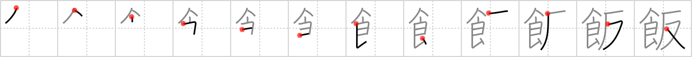

飯
← →
meal

Reading:
On-Yomi: ハン — Kun-Yomi: めし
Heisig story:
Food . . . anti-.
Koohii stories:
1) [Zarxrax] 4-6-2008(245): I'm anti-fastfood. Sit down and eat a real meal!
2) [dingomick] 1-3-2007(53): I'm Anti-McDonald's. Anti-Happy Meal. Anti-hamburger.
3) [stshores24] 8-9-2008(30): Part of every traditional Italian meal is when they eat the anti-pasto first. (Antipasto is not a food, it's the first course; see Wikipedia.).
| 4) [the_marshal] 24-5-2006(20): One should not eat food between meals, that's simply plain against the nutritionist rules. | Think of "anti" as a countraint. Meal is the contraint that keeps you from always eating. |
5) [hunchbag] 14-11-2009(16): Before a good meal, eat antipasto!